Проект + задания
Глава 0.2. ТЗ + файлы проекта
Основной проект
«Таинственный отпуск» — ваш основной проект. Это ваш главный проект на этом курсе. Выполняя домашние задания и консультируясь со своим наставником, вы будете работать над этим проектом, готовя его к защите.
Фыйлы проекта
Проект уже свёрстан. В течение курса вы сфокусируетесь на главном: супер анимациях.
Скачать стартовый шаблон.
Техническое задание
Цель: Обеспечить пользователям непрерывность восприятия содержания при переходах между разделами сайта и состояниями игры, создать весёлую атмосферу развлечения.
Задача: Дополнить сайт конкурса «Таинственный отпуск» UI и UX анимацией, соответствующей дизайну.
Описание проекта
О проекте
«Таинственный отпуск» — сайт конкурса-игры, в котором главный приз — путешествие на 14 дней.
В процессе конкурса игрокам предстоит угадать пункт назначения путешествия. Победитель может воспользоваться путевкой сам, либо подарить её другу. Время путешествия победитель выбирает самостоятельно в пределах двух лет.
Описание функциональности
Сайт представляет собой одностраничный лендинг. Лендинг состоит из разделов высотой в один экран. Прокрутка страницы происходит полной сменой одного экрана. Пока происходит переход между экранами и анимациями, прокрутка заблокирована.
Список разделов:
- Начало.
- История:
- — Глава 1;
- — Глава 2;
- — Глава 3;
- — Глава 4.
- Призы.
- Правила.
- Игра.
На последнем экране размещается «Игра».
Механика конкурса-игры
Для того, чтобы угадать пункт назначения путешествия игрокам необходимо сыграть с ботом ИИ «Соня» в Да-Нет-ки: задавать закрытые вопросы, на которые можно ответить только «Да» или «Нет».
- Игрок нажимает «Погнали».
- Запускается таймер, показывается поле ввода вопроса «Задать вопрос» и кнопка «Узнать».
- Пользователь задает вопросы вводя в поле и нажимая кнопку или
Enter.- — В чате выше поля ввода появляется его сообщение.
- Бот отвечает только «да» или «нет».
- — В чате выше поля ввода появляется поле со спиннером (три точки с зацикленной анимацией), показывающим ожидание ответа. Затем на месте спиннера появляется ответ «Да» или «Нет».
- Если пользователь пишет название загаданной локации: Страна/континент + название места: населенного пункта, название горы, озера, нац.парка и т. п., бот отвечает «да» и происходит переход к результатам игры «Победа!».
- Призы раздаются согласно порядку отгадывания:
- — 1-3 — путёвка;
- — 4-10 угадал — чемодан от организатора конкурса;
- — 10-910 — промокод на скидку 15%.
- Если время вышло, а пользователь не отгадал место назначения, показывается экран результата с сообщением о проигрыше «Не угадал!» и предложением попробовать еще раз — кнопка «Не сдавайся!». Количество попыток не ограничено.
В личном проекте вместо ответов бота выдаются рандомные ответы «Да» или «Нет». Если в поле вводится вопрос «Это Антарктида?», показывается экран «Победа!» с иллюстрацией моржа, а при вопросе «Антарктида?», показывается экран «Победа!» с иллюстрацией чемодана.
Описание общих блоков
Шапка
Шапка закреплена относительно вьюпорта и всегда присутствует на экране.
Состав шапки:
- — Логотип компании «Fjord Inc.»;
- — Меню;
- — Ссылки на социальные сети, скрытые за одно кнопкой шеринга.
Шапка имеет «цветовую схему» (3 цвета, в которые окрашены элементы и их состояния):
- — Главный цвет: белый, он не меняется;
- — Второстепенный цвет: цвет иконки шеринга, совпадает с цветом фона;
- — Цвет по наведению: светло-фиолетовый.
Все состояния приведены на схеме: default, hover, focus, current.
Аналогичные состояния у других элементов сайта.
- Картинка состояний элементов
Цветовая схема меняется в сценах Истории:
- Глава 1 — светло-фиолетовая.
- Глава 2 — синяя.
- Глава 3 — голубая.
- Глава 4 — совпадает с цветовой схемой по умолчанию.
Смена цвета анимируется.
Фон
В разделах «Начало» и «История» присутствует 3D-иллюстрация на фоне. В 3D присутствует 5 сцен, по одной на раздел/главу. При переходе между разделами и главами истории на иллюстрации происходит переход между сценами.
В оставшихся разделах «Призы», «Правла» и «Игра» 3D-иллюстрация на фоне отсутсвуют. Рендер анимации 3D должен останавливаться, чтобы не загружать ресурсы браузера. Нужно при переходе к этим разделам сделать появление однородного фона.
В каждой сцене имеется зацикленная анимация. Далее любую зацикленную анимацию будем называть «фоновая анимация» — не путать с анимацией фона.
Подробное описание анимации 3D ниже в соответствующем разделе.
Разделы
В каждом разделе имеется Заголовок и краткое сообщение.
1. Раздел «Начало».
Название конкурса, даты проведения и краткое описание. В сноске с дополнительной информацией.
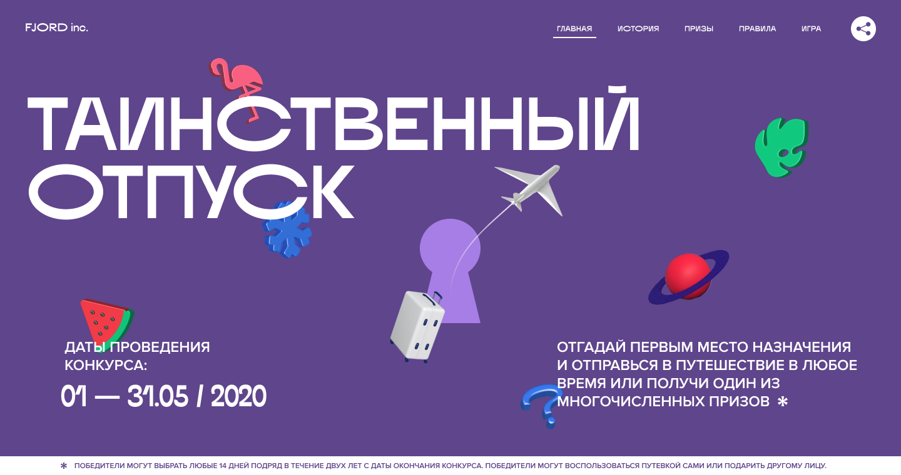
2. Раздел «История».
История об основателе компании, который завещал отправить в путешествие его мечты тех, кто угадает, куда он мечтал съездить, но так и не смог.
История в десктопной версии разделена на 4 главы-слайда, в мобильной — на 8 слайдов.
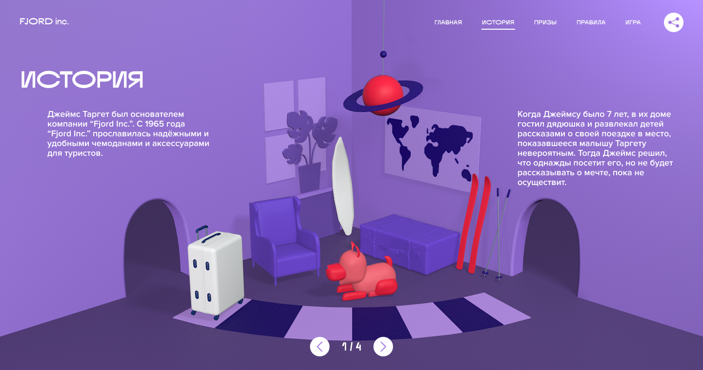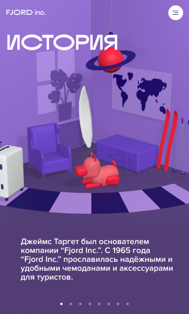
Остальные слайды истории: 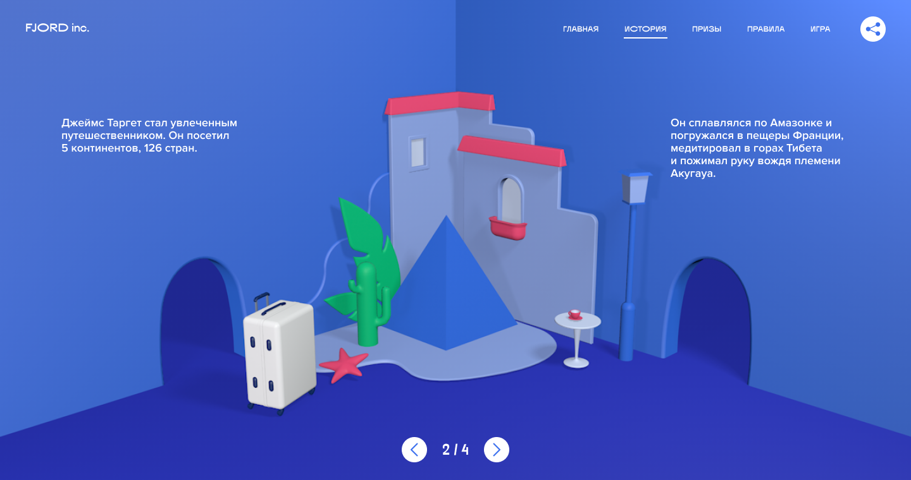
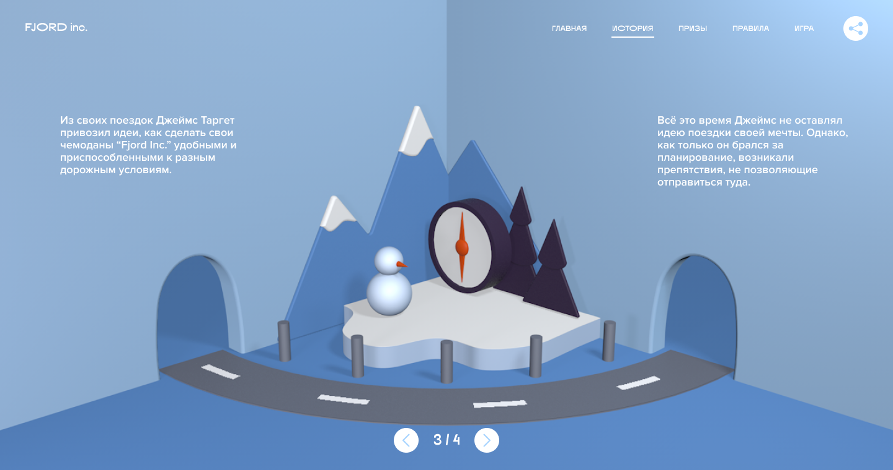
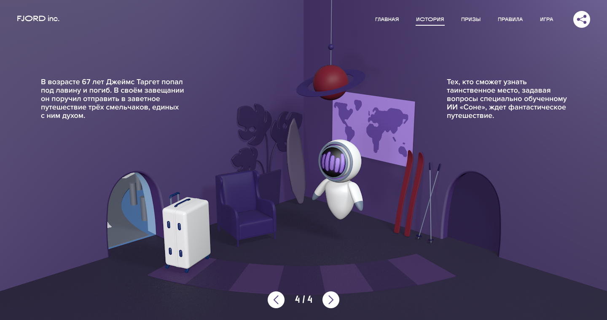
Смена слайдов реализуется с помощью библиотеки Swiper. Стандартная смена слайдов отключена, реализацию смены контента нужно реализовать на смене классов и CSS transition.
Переход между главами синхронизируется с 3D иллюстрации на фоне: 1 слайд — 1 сцена 3d в десктопной версии, 2 слайда — 1 сцена 3D — в мобильной.
Раздел состоит из 4 сцен (экранов), по которым путешествует Чемодан. Перемещение между сценами происходит поворотом относительно одной оси.
3. Раздел «Призы».
Кроме заголовка и текста имеется перечень призов с указанием их количества. 3 главных, 7 второстепенных и 900 утешительных. У каждого типа призов анимированная иллюстрация в SVG.
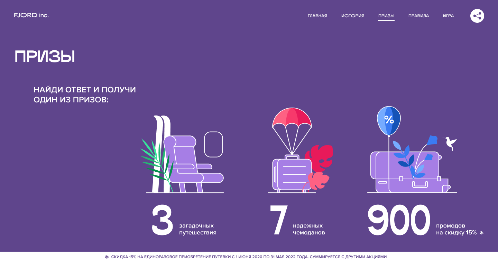
4. Раздел «Правила».
Кроме заголовка и текста имеется список шагов в игре. Внизу, в сноске, ссылки на подробные правила и правовые документы.
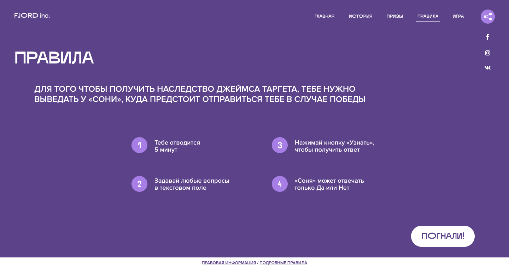
5. Раздел «Игра».
Смотрите описание механики выше.
В выданной верстке встроены три кнопки для тестирования экранов результатов игры. По нажатию на эти кнопки происходит переход на экран соответствующего результата без прохождения игры. По завершении работы над анимацией экранов результатов необходимо удалить/скрыть тестовые кнопки.
Разработка анимации
На свёрстанной странице лендинга необходимо реализовать анимацию в соответствии с видео проекта.
В отдельных случаях когда важно воспроизвести тайминг движения, в дополнении к ТЗ (в отдельных заданиях) приведены графики и описания, по которым нужно задать временные функции или easing.
Если задание никак не может быть выполнено с той версткой, которая дана верстальщиками, необходимо доработать верстку. Делать это нужно только в том случае, если вы рассмотрели все возможные варианты с текущей версткой.
В разделе 3D кроме анимации необходимо выполнить загрузку объектов и нарисовать фигуры из примитивов по схемам. Схемы будут в приложении к ТЗ (в отдельных заданиях). Временные функции будут указаны или будут приведены графики, по которым нужно воспроизвести анимацию.
Замечания:
Обращайте внимание на то, что анимация появления элементов в большом числе случаев отличается от анимации скрытия этих элементов.
CSS переходы между состояниями
CSS transition — для линейных переходов между состояниями.
Удобно также использовать CSS variables и спец.слово currentColor — для удобства управления, особенно при смене «темы» — «цветовой схемы».
1. Состояния интерактивных элементов.
К интерактивным элементам относятся элементы с состояниями взаимодействия hover, focus и active: ссылки и кнопки.
Необходимо дополнить стили описанием анимации переходов.
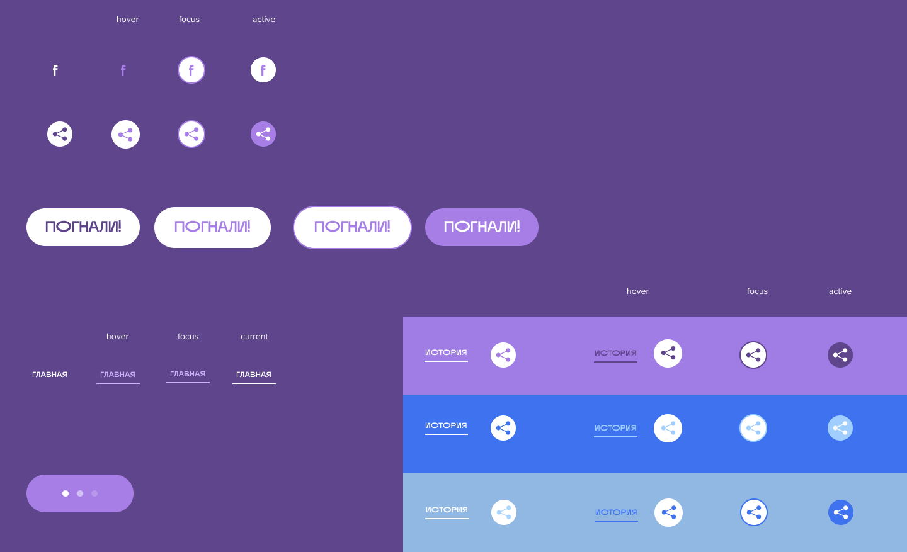
2. Открытие и закрытие кнопок шеринга в социальных сетях.
Кнопки «подтягиваются» снизу из прозрачности.
Обратите внимание, что анимация появления кнопок отличается от анимации скрытия.
Анимацию кнопок нужно сделать внахлёст по отношению друг к другу: от первого пункта к последнему. Время появления последних больше первых — эффект «первые подтягивают за собой последующие».
3. Появление и скрытие контента разделов.
CSS transition DOM элементов страницы — лёгкое управление при прокрутке.
1. Появление заголовков и даты проведения конкурса.
Референс:
https://artisantalent.com/for-talent/
Необходимо:
— — Написать скрипт, который разделит текст заголовков на символы;
— — Реализовать CSS transition появления каждого символа при смене класса экрана на видимый;
— — При скрытии экрана анимации быть не должно.
##### Замечание по технологии
Автоматизация разбиения текста на элементы — слова и символы — с помощью JS с учетом разметки.
Плюс автоматизация задания свойств transition-duration, transition-delay, animation-duration, animation-delay с помощью JS. Практика анимации большого количества однородных элементов в составе группы — создание общего timeline в CSS.
2. Появление текстов в разделах.
Текст появляется с задержкой после заголовка (смотрите видео).
— — Из прозрачности;
— — Снизу.
3. Появление текстов в слайдере в разделе «История».
В активном слайде тексты появляются справа из прозрачности (смотрите видео). Второй абзац справа появляется с задержкой и с большей длительностью по сравнению с первым абзацем.
4. Появление однородного фона в разделах «Призы», «Правила», «Игра» Реализовать появление/скрытие однородного фона в разделах снизу экрна при переходах между экранами.
Если имеющаяся верстка не позволяет реализовать анимацию в необходимом виде, нужно доработать верстку.
5. Появление нумерованного списка в разделе «Правила».
Пункты списка начинают появляться по очереди до того, как предыдущий элемент появился и остановился полность — «внахлёст».
Круг появляется из центра до размера чуть больше конечного, затем переходит к конечному размеру: проскакивает по инерции конечное состояние, потом как на резинке встает в нужное положение. Движение должно показывать эластичность круга, как мячика.
Цифры анимируются отдельно и появляются из прозрачности. С появлением круга «внахлёст». Когда круг завершает движение, цифры уже появились.
Текст выезжает из прозрачности справа. Анимацию текстов пунктов нужно сделать внахлёст по отношению друг к другу: от первого пункта к последнему. Время появления последних больше первых — эффект «первые подтягивают за собой последующие».
6. Появление пагинации.
Текст пагинации появляется быстро из прозрачности. Кнопки выезжают с двух сторон с вращением как у колеса (без проскальзывания).
7. Появление кнопки «Погнали» и формы игры.
У кнопки «Погнали» сначала появляется фон — вытягивается из круга. Потом до окончания движения внахлёст появляется текст. Текст не меняет размер и не движется.
При переходе к игре название кнопки «Погнали» меняется на «Узнать» через прозрачность.
В мобильной версии на кнопке стрелка вместо надписи «Узнать». Поэтому нужно сделать обратную анимацию из вытянутого фона в круг и показать стрелку.
Одновременно мгновенно появляется другой круг и вытягивается в фон поля ввода. Появляется из прозрачности placeholder поля.
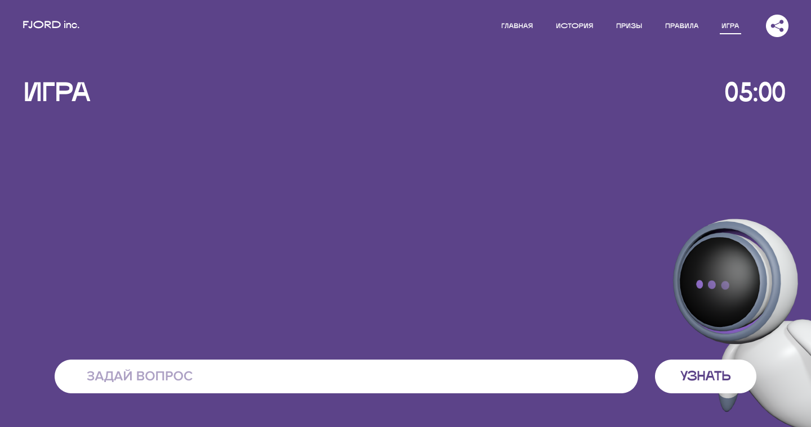
8. Появление ответов в чате.
Вопрос быстро появляется внизу чата и отъезжает вверх на высоту поля ответа. Появляется поле ответа со спиннером, потом спиннер мгновенно исчезает и из прозрачности быстро появляется ответ.
Когда в чате уже есть сообщения нужно создать элементы, с помощью JS узнать высоту нового вопроса и ответа и поднять все предыдущие сообщения на эту высоту, затем вставить новые вопрос/ответ (анимацию здесь та же, что описана выше).
Нужно реализовать анимацию подъёма предыдущих сообщений с эффектом «первые подтягивают за собой последующие» в соответствии с видео.
9. Появление кнопки «Не сдавайся!».
Текст появляется из прозрачности. Круг со стрелкой выезжает справа с вращением как колесо. Важно сделать эту анимацию без «проскальзывания колеса».
10. Появление/скрытие сноски.
Появляется снизу и скрывается вниз без изменений прозрачности. При переходе между разделами «Призы» и «Правила». Сноска не исчезает, на ней меняется текст через прозрачность.
В мобильной версии сноска скрыта в левый нижний угол: текст скрыт в прозрачность, фон сдвинут влево вниз. При клике на звездочку выезжает фон с кнопкой скрытия и появляется текст через прозрачность.
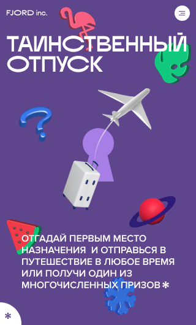
Если фон выполнен свойством background его необходимо выделить в отдельный псевдоэлемент только в мобильной версии.
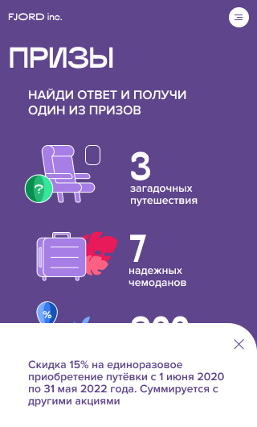
11. Скрытие разделов.
Все разделы кроме экрана игры исчезают через прозрачность как один слой (без анимации отдельных элементов). Кроме этого все разделы скейлятся: начало увеличивается (мы проваливаемся в замочную скважину), остальные уменьшаются.
При переходе к призам 3D сцена закрывается оверлеем-фоном фиолетового цвета. Оверлей появляется снизу.
12. Скрытие экрана игры при переходе к результату игры.
При переходе к результатам заголовок уезжает с прозрачностью влево, таймер — вправо, а форма переписки вниз. Чат исчезает через прозрачность.
13. Появление текстов результатов победы.
Тексты появляются с уменьшением: у заголовка больший скейл, у текста меньше. Текст появляется из прозрачности.
Заголовок рисуется обводка — смотри SVG.
4. Смена темы в главах Истории
Необходимо реализовать смену темы элементов UI всего сайта при переходе между главами.
- — Добавить присвоение классов;
- — Описать цвета тем;
- — Передать цвета в необходимые элементы UI.
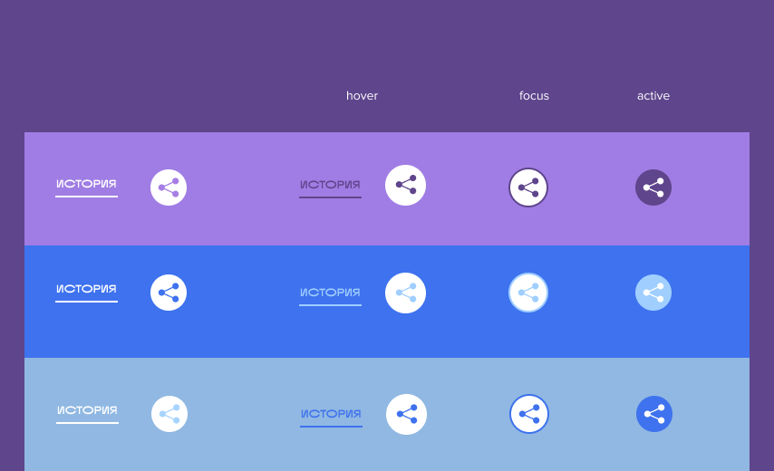
CSS анимация иллюстрации
1. Анимация точек спиннера в режиме ожидания ответа бота.
Нужно сделать зацикленную анимацию точек: меняется прозрачность от 100% до 20% и обратно. Анимация трёх точек запускается с задержкой относительно друг друга — создается эффект волны.
2. Анимация ИИ «Сони» на экране «Игра».
Необходимо сделать анимацию картинки ИИ «Сони»: как она выезжает по диагонали с вращением и скейлом. После этого картинка колеблется вверх-вниз на месте. Исчезать «Соня» должна с обратной анимацией.
3. Анимация иллюстрации «Чемодан и фламинго».
Необходимо сделать анимацию появления в соответствии с видео:
- — Чемодан движется по диагонали со скейлом из прозрачности;
- — Фламинго по другой диагонали без скейла;
- — Листья появляются с вращением.
Нужно сделать фоновую анимацию колебания фламинго. При этом фламинго вращается относительно точки пересечения лап. Вращение идёт с небольшой задержкой относительно колебания вверх-вниз — так как происходит по инерции от этого колебания.
Анимация Цифр в разделе Призы
Анимация цифр (количество призов) — покадровая анимация по requestAnimationFrame. Меняется текст, большое количество символов перебирается для эффекта, они не несут основную информацию, поэтому имеет смысл создавать временные элементы и записывать в них временные цифры с помощью JS.
Число 900 нужно начинать показывать с числа 11.
Обратите внимание, что менять цифры нужно 12 кадров в секунду. Длительность смены одного числа меньше секунды.
Анимация Таймера
Анимация обратного отсчета. Покадровая анимация по requestAnimationFrame: в кадре проверяются текущие данные объекта Date для показа актуальной информации о пройденном времени: обратный отсчёт с момента захода в сессию игры. Максимальная длительность одной игровой сессии — 5 минут. При повторном заходе в новую сессию игры, таймер сбрасывается. Форматирование: оставшееся время до конца сессии время округляется до меньшего и показывается в формате MM:SS.
Анимация в SVG
1. Анимация рисования заголовков Результатов.
Необходимо сделать анимацию рисования контуров заголовков результатов игры. Обратите внимание, что рисуется из двух-трех точек одновременно.
Символы «Не угадал!» при этом должны падать сверху с одним отскоком.
Все символы «Победа!» появляются одновременно, а символы «Не угадал!» должны появляться с задержкой внахлёст. Обратите внимание на движение контура, которых создают символы вместе: он изогнутый, не прямой.
2. Анимация иллюстраций призов.
SMIL-анимация в SVG. Анимация изолируется в SVG, начало сюжета проигрывается один раз, фоновая анимация остается и зацикливается. Необходимо обратить внимание на следующие нюансы анимации SVG:
- — Движение вдоль
path; - — Способы задания центра трансформации, так как css-свойство
transform-originподдерживается по-разному в разных браузерах и как правило, задаётся относительно всего SVG, а не относительно элемента; - — Позволяет морфить
path.
Для каждой иллюстрации даётся по два SVG файла: начальное и конечное состояние картинок.
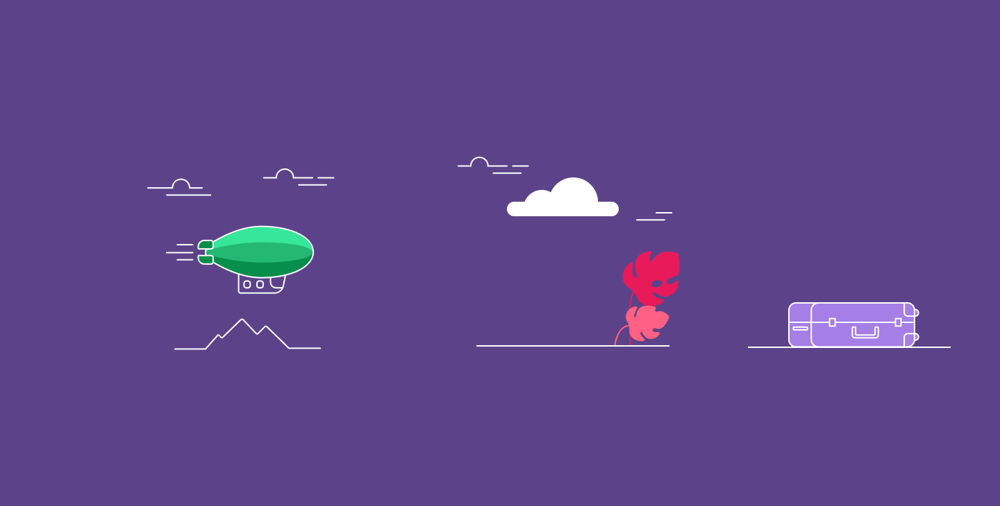
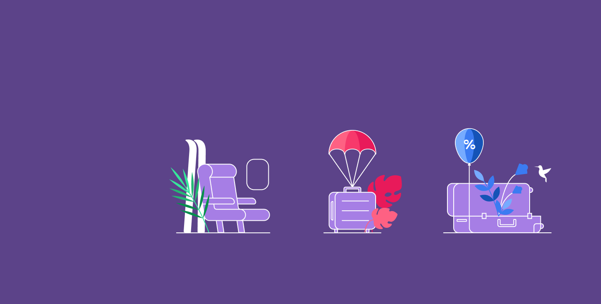
1. Анимация дирижабля.
Летит дирижабль, покачиваясь. В дирижабле одно из окошек приближается и становится большим, к окошку подъезжает кресло, лыжи и лист.
Фоновая анимация: в окошке летят облака, лыжи и листок покачиваются.
Референс:
https://dribbble.com/shots/3002580-Dirigible-animation — полет дирижабля, амплитуду сделать небольшой;
https://dribbble.com/shots/7440664-Illustration-for-a-Travel-Reward-Credit-Card-Service-Website — облака в окне.
2. Анимация чемодана с парашютом.
Появляется облако, из облака выпадает парашют с чемоданом, приземляется в растения, облака улетают вверх с прозрачностью.
Фоновая анимация: листья колеблются и облака передвигаются.
Референс:
https://dribbble.com/shots/4111276-Up-in-the-Clouds — траектория проще.
3. Анимация чемодана с воздушным шариком.
Появляется чемодан из прозрачности, открывается крышка, из чемодана поднимается воздушный шарик на веревочке, веревочка не даёт шарику улететь — шарик колеблется и останавливается. Одновременно появляются цветы, и рядом колибри.
Фоновая анимация: колибри летает.
Референсы:
https://dribbble.com/shots/4028029-Travel-Insurance.
Анимация иллюстраций в Canvas
Необходимо повторить анимации иллюстраций результатов игры проигрыша и выигрыша главного приза из видео-примера.
По завершении работы над анимацией результатов необходимо удалить/скрыть тестовые кнопки показа результатов.
Замечание по технологии Использовать нужно низкоуровневое рисование в canvas с помощью JS.
1. Анимация с моржом.
Необходимо сделать рисование в canvas:
- — Всплытие моржа на льдине — воспроизвести затухающие колебания вверх-вниз и вращения как в видео;
- — Появление снежинок и фоновую анимацию колебания снежинок вверх/вниз;
- — Вылет самолета по части синусоиды (наклон самолета соответствует положению на синусоиде);
- — Рисование следа от самолета (cubic-bezier+круг), точка и наклон остного конца совпадает с хвостом самолета, круглый конец — круг, который увеличивается на одном месте (верхний край закреплен).
2. Анимация с крокодилом.
Необходимо сделать рисование в canvas:
- — Появление замочной скважины из прозрачности;
- — Вылет объектов из центра и падение их вниз за край экрана: они должны сначала зависнуть, а затем, с ускорением улететь вниз;
- — Появление из-за маски крокодила.
Фоновая анимация: капают слезы из глаза крокодила. 1 слеза — 1 цикл.
Анимация 3D-иллюстрации
Из предоставленных материалов необходимо собрать сцены в 3D с помощью библиотеки Three.JS в соответствии с дизайном.
При сборке сцен если не указаны точные координаты объектов, необходимо ориентироваться на внешнее сходство (для ускорения работ). По запросу может быть предоставлен исходник 3D в Cinema 4D.
Необходимо выполнить:
- — Фоновые анимации на сценах;
- — Переходы между сценами с помощью анимации камеры;
- — Эффект реакции на движение курсора: изменение точки, откуда смотри камера;
- — Растровый эффект поверх сцены с помощью техники
Post-Processing.
Сцена «Замочная скважина»
1. Сборка сцены из элементов.
Загружаемые объекты:
- — Чемодан;
- — Самолет;
- — Арбузная долька.
Объекты, составленные из примитивов:
- — Планета Сатурн из сферы и диска;
Геометрии Extrude из SVG:
- — Плоскость с замочной скважиной;
- — Снежинка;
- — Вопрос;
- — Лист;
- — Фламинго;
2. Анимация разлёта элементов сцены.
Появление из центра замочной скважины с изменением скейла из 0 и изменением вращения. Вращение нужно подобрать самостоятельно.
3. Анимация самолета.
- — Самолет;
- — Проходит по дуге из-за скважины;
- — Огибает край скважины;
- — Увеличивается в размере;
- — Вращается относительно собственной оси.
Рекомендуется делать после выполнения заданий по анимации камеры.
4 сцены «История»
1. Сборка сцен из элементов.
Загружаемые объекты:
- — Чемодан;
- — Стены одной комнаты;
- — Собака;
- — Комната 1 — общая часть с комнатой 4;
- — Комната 1 — оставшаяся часть;
- — Комната 2;
- — Комната 3;
- — Компас;
- — ИИ «Соня» в комнату 4.
Объекты, составленные из примитивов:
- — Люстра в форме планеты Сатурн: 2 сферы, диск и цилиндр, пирамида;
- — Фонарный столб: 2 цилиндра, сфера, 3 усеченные пирамиды;
- — Снеговик: 2 сферы и конус;
- — Столбики у дороги.
Геометрии Extrude из SVG:
- — Цветок в комнате 1;
- — Листья в комнате 2.
Свет:
Нужно поставить в соответствии со схемой, прилагающейся в архиве с объектами.
Материалы: Всем объектам нужно задать материал в соответствии со схемой, прилагающейся в архиве с объектами и SVG для загрузки.
Для мобильной версии нужно отключить свет и заменить материалы на MatCap. Картинки прилагаются в архиве.
2. Анимация хвоста собаки в 1 сцене истории.
Необходимо сделать покадровую анимацию виляния хвоста собаки в соответствии с видео.
3. Анимация покачивания люстры «Сатурн» в 1 сцене истории.
Необходимо сделать покадровую анимацию колебания люстры в соответствии с видео (без затухания). Диск должен также колебаться с задержкой относительно колебания люстры, так как это инерционное движение.
Временные функции: можно использовать синусоиду.
4. Анимация листьев в 2 сцене истории.
Необходимо сделать покадровую анимацию колебания листьев в соответствии с видео. Колебания должны быть с затуханием и возобновляться через некоторый промежуток времени.
Временные функции: можно использовать синусоиду.
5. Анимация стрелки в 3 сцене истории.
Необходимо сделать покадровую анимацию колебания листьев в соответствии с видео.
Временные функции: похожа на синусоиду, но более пологая в крайних точках. График будет приложен в заданиях.
6. Анимация флуктуации ИИ «Сони». Необходимо сделать покадровую анимацию колебания «Сони» вверх/вниз в соответствии с видео. Нужно сделать колебания рук «Сони» с задержкой относительной колебания «Сони», так как это инерционное движение.
Временные функции: можно использовать синусоиду.
Анимация камеры
Для анимация переходов между сценами и реакция на движение курсора необходимо использовать технику Rig Камеры.
Необходимо сделать конструкцию для пролета в замочную скважину и облёта вокруг сцен с комнатами. Далее нужно реализовать анимацию с помощью рига.
В конструкции рига нужно учесть то, что камеру нужно вращать вверх/вниз относительно центра сцены при движении курсора. Смотри пример в видео.
Референс:
https://www.instagram.com/p/B6dfJOaBBUi/?igshid=12zvwose8z2ce.
С помощью настроек камеры и рига нужно реализовать изменение отображения сцен при портретной ориентации сайта.
Растровая анимация поверх 3D-сцены «Блики и пузыри»
Использовать необходимо Post-Processing.
Однако вставлять два контекста WebGL — большая нагрузка на браузер. На слабых устройствах это может привести к прекращению работы браузера.
При Post-Processing можно использовать шейдеры 2D эффектом поверх 3D сцен.
Необходимо сначала работать с картинкой из макета для написания шейдера для 2D-эффекта, а затем перенести эти шейдеры на canvas с 3D.
Описание эффекта:
- Небольшое колебание
Hueцвета, с достижением эффекта легкого мерцания. - Три круглых линзы — картинка расширена по центру и сжата по краю круга — двигаются по затухающей синусоиде снизу вверх.
- Вокруг линз 2-пиксельная полупрозрачная обводка и один сектор круга в левом верхнем крае круга внутри — блик.